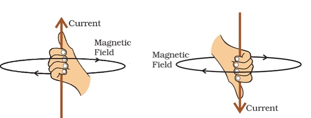
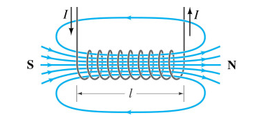
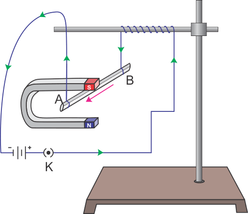
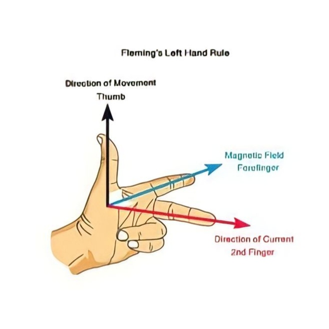
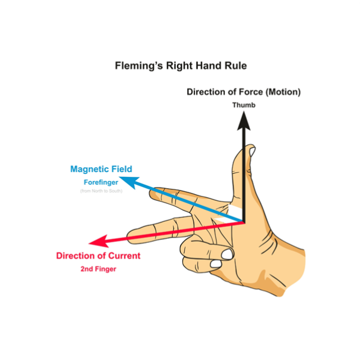

Properties of Magnetic Field lines
- Magnetic Field lines never cross each other.
- Magnetic Field lines always make closed loops.
- The density of the Field lines indicates the strength of the field.
- By convention, Magnetic Field lines always emerge or start from the North Pole and terminate at the South Pole.
Maxwell's Right-hand Thumb Rule

According to this law, If a straight current-carrying wire is imagined to be held in the right hand, with the thumb stretched along the direction of the current, the direction of the magnetic field produced by the current is in the direction in which the fingers are curled.
This rule is also known as Maxwell’s crokscrew rule.
Magnetic Field lines due to a Current in a straight conductor
The magnetic field lines around a straight conductor carrying current are concentric circles on planes perpendicular to the direction of current.
The direction of magnetic field due to straight current carrying wire can be obtained by 'Right Hand Thumb Rule'.
The magnitude of magnetic field is produced at a given point increases as the current through wire increases and decreases as the distance from it increases.
Magnetic Field lines due to a Current in a circular loop
- The magnetic field lines will be nearly concentric circles centred on the point through which the wire passes.
- The magnetic field at the centre of the loop is perpendicular to the plane of the loop.
Magnetic Field due to a Solenoid
- A solenoid is a long cylindrical coil containing a large number of closely spaced turns of insulated copper wire.
- The magnetic field produced by a current carrying solenoid is similar to the magnetic field produced by a bar magnet.
- Field lines inside the solenoid are parallel straight lines.
A Magnetic Field exerts a force on a Current-carrying conductor

- Moving charged particle as well as also current-carrying wire produces their
own magnetic field and when they are placed in and another magnetic field they
experiences a force acting on them
- On a straight current carrying conductor is mutually perpendicular to the
magnetic field and the direction of the current.
Fleming's Left-hand Rule
 If the forefinger, second finger and thumb of the left hand are stretched at right angles to each other, with the forefinger in the direction of the field and the second finger in the direction of the current then the thumb indicates the direction of the force.
Electromagnetic Induction (EMI)
- A current flows through a coil as long as a magnet moves near the coil, the coil moves near the magnet or both of them move. So, a current flows in the coil when there is a relative motion between the magnet and the coil.
- While there is a relative motion between the magnet and the coil, the magnetic field around the coil keeps changing. The changing magnetic field causes the current in the coil.
Lenz's Law
- When the north pole of a magnet moves towards the loop, a current is induced in the loop, in such a way that it opposes the motion i.e. keeps it away from the magnet (the current is induced in anti-clockwise direction).
- When north pole of the magnet is moved away from the loop, a current is induced in the loop in such a way that it opposes the motion i.e. attracts the magnet towards it. The current is induced in clockwise direction in the coil).
In the above example, the magnetic field associated with the coil or the number of magnetic field lines of the magnet passing through the coil is known as Magnetic Flux Φ . So, we can define magnetic flux as the number of magnetic lines passing through a given area. Magnetic flux is a scalar quantity. Its SI unit is Weber (Wb) and its CGS unit is Maxwell.
- The direction of the current depends on whether the magnetic field is increasing or decreasing. The magnetic field around the coil increases as the coil and magnet come closer, and decreases as they move apart. That is why the currunt Blown one direction on moving the magnet towards the coil and in the opposite direction on moving the magnet away from the coil.
A current produced by a changing magnetic flux is called an induced current.This phenomenon is called electromagnetic induction.
The phenomenon in which an electric current is induced in a circuit because of a changing magnetic field is called Electromagnetic Induction.
Fleming's  Right-hand Rule
If the forefinger, second finger and thumb of the right hand are stretched at right angles to each other, with the forefinger in the direction of the field and the thumb in the direction of the motion of the wire then the current in the wire is in the direction of the second finger.
Domestic  Electric Circuits
Electric Circuits
| Alternating Current | Direct Current |
|---|---|
| ㅤ | ㅤ |
| ㅤ | ㅤ |
| AC is easy to be transferred over longer distances- between two cities- without much energy loss. |
DC cannot be transferred over a very long distance. It loses electric power. |
| ㅤ | ㅤ |
| The frequency of AC is dependent upon the country. But, generally, the frequency is 50 Hz or 60 Hz. |
DC has no frequency or zero frequency. |
| ㅤ | ㅤ |
| In AC the flow of current changes its direction forward and backward periodically. |
Electrons only move in one direction– forward. |
Live, Neutral and Earth Wires
The electric power lines enter our house three wires- the live wire, the neutral wire and the earth wire.
The live wire is at 220 volts. The ground wire is maintained at zero potential by connecting it to a large plate buried in the ground. And the neutral wire is also maintained at almost zero potential
By convention, red is for live (L) , black is for neutral (N) and green is for earth (E).